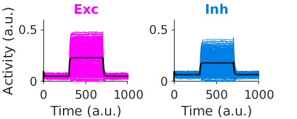
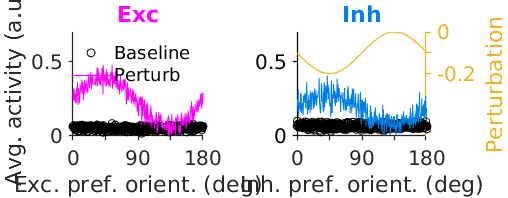
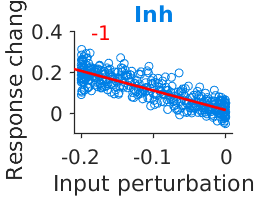
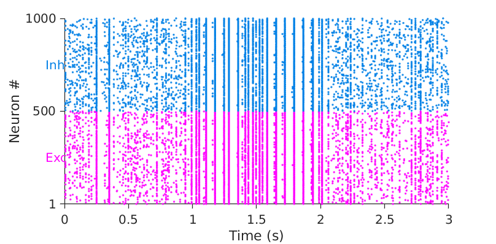
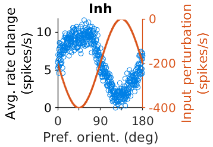
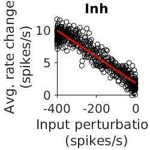

This is the readme for the models associated with the paper:
Sadeh S, Clopath C (2020) Patterned perturbation of inhibition can reveal the dynamical structure of neural processing eLife 9:e52757
10.7554/eLife.527577
This MATLAB code was contributed by Sadra Sadeh.
Example runs:
For rate based simulations type the following at the matlab command prompt:
ISN_fs_1d
visualize__rateNet
to produce the following graphs:



and for spiking simulations run:
ISN_fs_1d__spikingNet
visualize__spikingNet
which will generate the following


